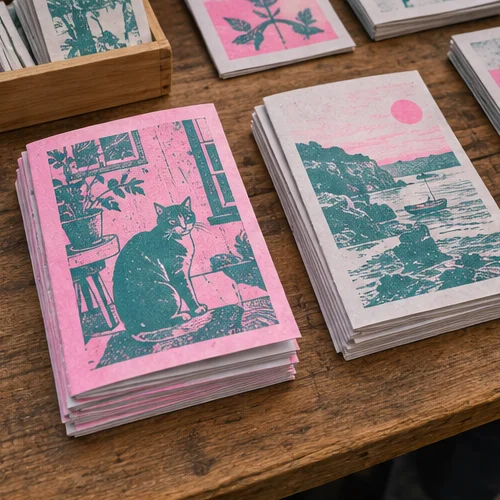
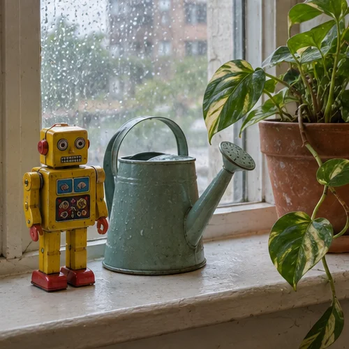
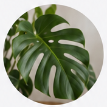
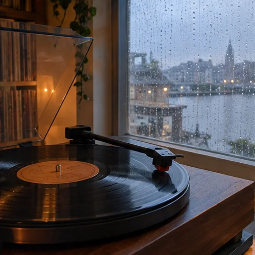

Ines Okafor
Finished the zine! 40 copies, risograph, two colours. Swapping them at the Saturday market if anyone wants one.

814
96
Finished the zine! 40 copies, risograph, two colours. Swapping them at the Saturday market if anyone wants one.


Wrote up how we cut our app's cold start in half. Mostly by deleting things.

Hot take: the best feature of any app is the off switch.

Twelve years in, I finally took a sabbatical. Week one: I didn't open a single dashboard. Week two: I learned to make tortillas.

Today's tiny robot waters the plants. Tomorrow: he repots them.


Monstera put out a new leaf overnight. I am unreasonably proud.
New mix is up. Two hours of rainy-day jazz for anyone else working through the weekend.

Thursday launch party is ON. Doors at 7, bring friends, bring zines.

Shot a whole roll at the harbour this morning. Developing tonight, fingers crossed.
Hiring a part-time illustrator for a community garden map. Small budget, big heart. DMs open.

Day 412 of sitting on the keyboard. Productivity in this household remains at zero.